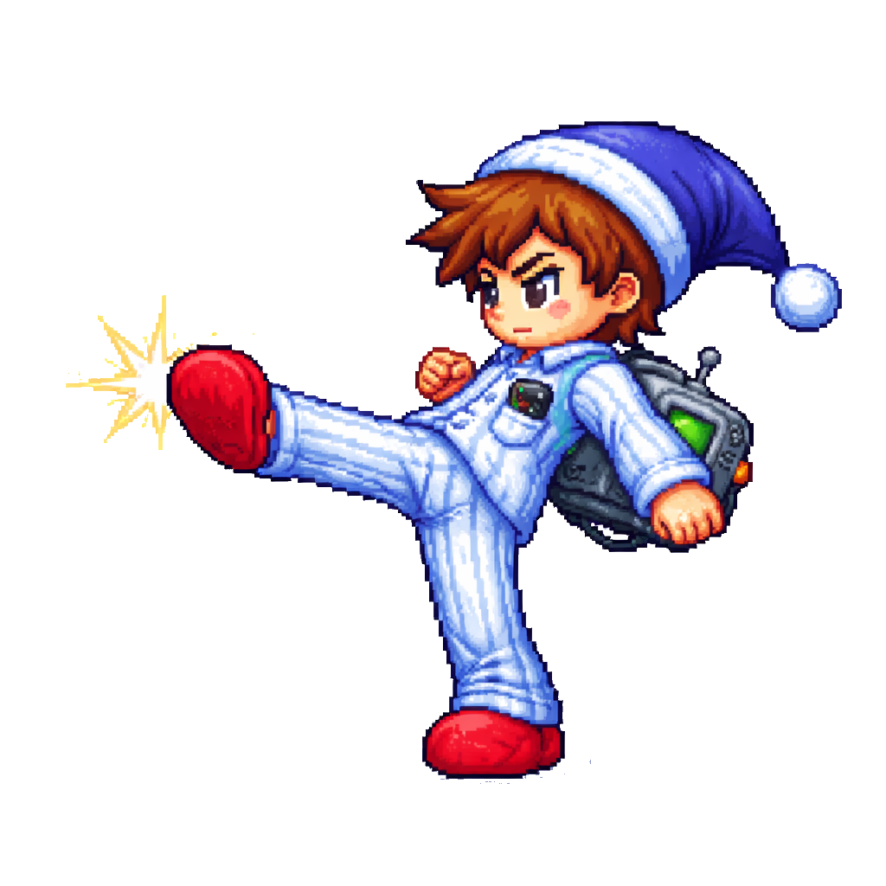
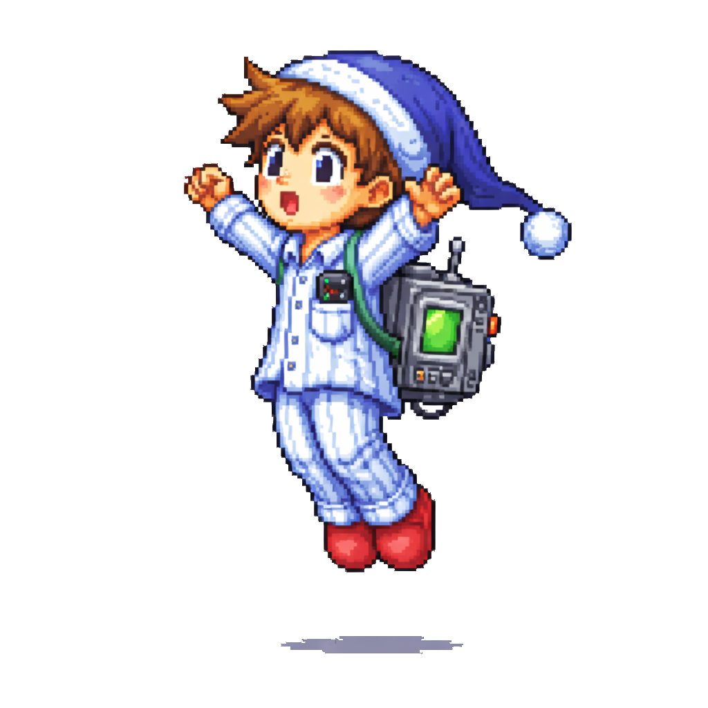
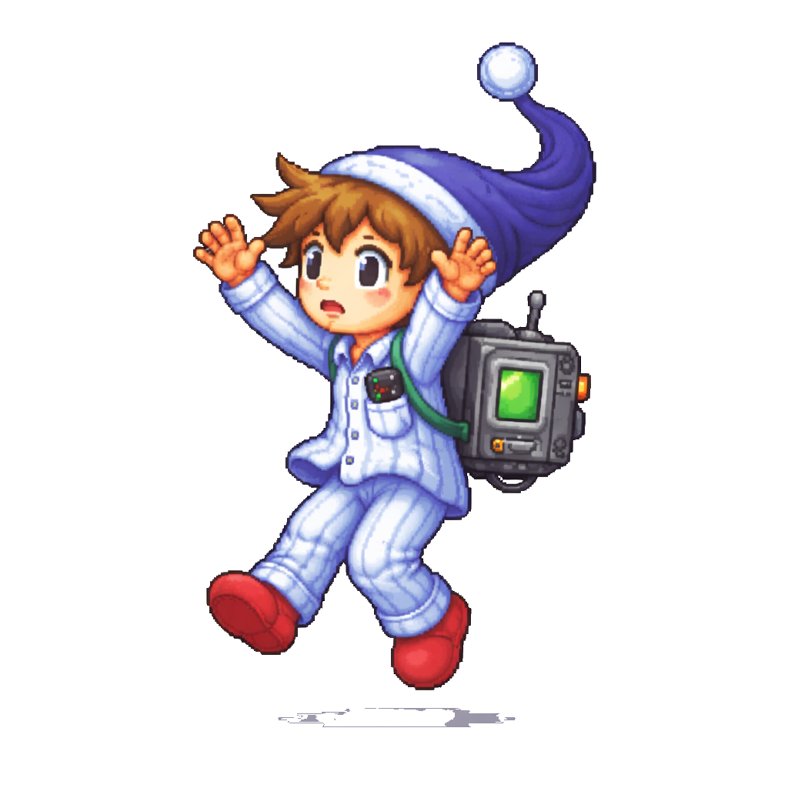
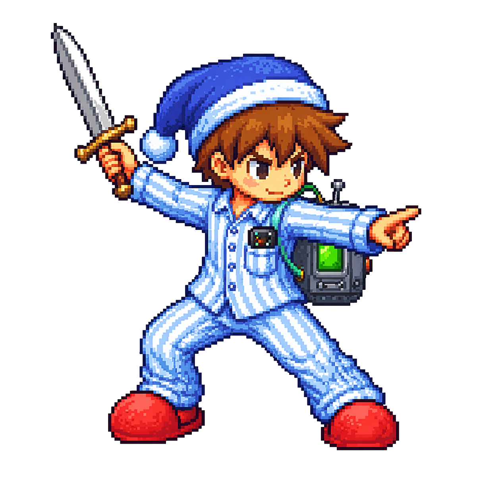

Guía de marca completa. Paleta, tipografía, tono de voz, y cómo usar a Niko.
Versión1.0 · Mayo 2026
PlataformaPC · Unity 2D
IdiomaES principal · EN
01 — Logo
Sistema de Logo
El wordmark combina la gravedad romana de Cinzel con el caos doméstico de Niko. Dos palabras en tensión — Chrono (tiempo épico) + Kidnapper (absurdo cotidiano). Esa tensión ES la marca.
Primario — sobre oscuro
Secundario — sobre claro
Alternativo — sobre dorado
Ícono solo — sobre rojo
Espacio de Seguridad
Mantener un área libre equivalente a la altura de la "C" de CHRONO en todos los lados del logo. Nunca colocar elementos sobre el símbolo del microondas.
Usos Correctos e Incorrectos
Permitido
✓ Logo dorado sobre fondos oscuros (#0a0a0f, #12121e)
✓ Logo negro sobre fondo marfil o dorado
✓ Solo el símbolo del microondas para avatares/iconos
✓ Escalar proporcionalmente desde 32px mínimo
✓ Versión monocromática en blanco o negro puro
Prohibido
✗ Cambiar los colores del logo por cualquier otro color
✗ Separar "CHRONO" de "KIDNAPPER" como logos diferentes
✗ Agregar sombras, brillos o efectos 3D al wordmark
✗ Usar sobre fondos con poco contraste
✗ Rotar, distorsionar o italizar el texto del logo
✗ Reemplazar la tipografía por otra fuente
02 — Color
Paleta de Color
Cuatro colores primarios extraídos directamente de Niko: el oro romano de su gladius, el azul de su pijama, el rojo de sus pantuflas, y el negro profundo del tiempo fracturado.
Oro Romano
#c9a84c
Primario · Acción · CTA
Azul Niko
#3a4fc1
Personaje · UI · Info
Rojo Pantufla
#c0392b
Peligro · Los Cronos · HP
Negro Tiempo
#0a0a0f
Fondo · Base · Canvas
Paleta Secundaria
Escalas de cada color primario + el verde del microondas como acento de energía/vida.
Oro brillante#f0cc6e Hover states, highlights
Oro apagado#8a6e2f Bordes, labels secundarios
Rojo oscuro#8b1a1a Los Cronos, danger states
Mármol#e8e0d0 Texto principal claro
Verde Micro#2ecc71 Batería, vida, energía
Color por Capítulo Histórico
Cada era tiene un acento de UI único que no reemplaza la paleta base, sino que la tinta.
Cap. I · Roma44 a.C. Dorado imperial
Cap. II · Turquía1923 Rojo otomano
Cap. III · Alemania1941 Gris acero
Cap. IV · Egipto1336 a.C. Ámbar faraónico
Cap. V · Francia1789 Azul revolución
Gradientes de Marca
Tiempo Oscuro
Oro Romano
Los Cronos
03 — Tipografía
Sistema Tipográfico
Tres familias, tres roles. Cinzel para la épica histórica. Crimson Pro para la narrativa. Space Mono para el HUD y la tecnología rota del microondas.
DisplayCinzel 900 88–110px LS: 0.08em
CHRONO
Títulos de sección Pantallas de título
H1 HeroCinzel 700 48–72px LS: 0.06em
44 a.C. — Foro Romano
Titulares principales Hero headlines
H2Cinzel 600 28–36px LS: 0.05em
El Relojero no negocia.
Subtítulos de sección Nombre de capítulos
H3Cinzel 400 18–22px LS: 0.08em
Capítulo I · Un mundo sin Imperio
Labels de UI Títulos de tarjetas
BodyCrimson Pro 300 17–19px LH: 1.8
Una tormenta eléctrica, un cable mal conectado. El microondas quedó fusionado a su espalda y lo lanzó al Foro Romano en el año 44 a.C., todavía en pijama.
Lore, narrativa Descripciones largas
Body italicCrimson Pro 300i 17–19px
"Solo quería quitarse esa cosa de la espalda. Pero primero, sobrevivir a la historia."
Citas, énfasis Taglines
Mono UISpace Mono 400 9–12px LS: 0.15em
BATERÍA: 78% · ERA: 44 a.C. · LOS CRONOS: ACTIVOS
HUD, datos Etiquetas técnicas
Muestra · Dark mode
Un mundo sin Imperio Romano.
El Senado romano esperaba a César para asesinarlo. Pero César nunca llegó. Niko no lo sabía todavía, pero acababa de borrar los cimientos de todo el mundo moderno.
Muestra · Light mode
Un mundo sin Imperio Romano.
El Senado romano esperaba a César para asesinarlo. Pero César nunca llegó. Niko no lo sabía todavía, pero acababa de borrar los cimientos de todo el mundo moderno.
// CHRONO_PACK · v2.04 · BOOT SEQUENCE
▶ STATUS: ONLINE · TEMPORAL_LOCK: FAILED
ERA_CURRENT: 44 BC · ROMA · FORO_ROMANO
BATTERY:████████░░ 78%
⚠ LOS_CRONOS: DETECTED · DISTANCE: 240m
// Niko: "No. No. NO." · ACTIVATING...
04 — Tono de Voz
Tono de Voz y Comunicación
Chrono Kidnapper habla como Niko: alguien que entiende la gravedad de lo que está viviendo, pero que no puede creer que le esté pasando a él. Serio sobre la historia, absurdo sobre sí mismo.
Absurdo-Serio
La situación es cómica. Las consecuencias son reales. La marca no elige — vive en la tensión entre los dos.
"Borré el Imperio Romano. Por accidente. Mientras intentaba calentar sobras."
Relatable-Épico
Niko no es un héroe. Es un tipo normal al que le pasan cosas épicas. La comunicación siempre ancla lo grande en lo pequeño.
"Cinco momentos que cambiaron la historia. Un solo tipo en pijama. Sin plan."
Educativo-Lúdico
La historia es real. Los datos son reales. El juego los hace divertidos. La marca refuerza que aprender algo no duele.
"¿Sabías que sin Atatürk, Turquía podría no existir? Niko tampoco lo sabía. Ahora es su problema."
Ejemplos por Canal
Steam
Descripción de tienda
Un tipo en pijama. Un microondas defectuoso. Toda la historia humana, en riesgo.
Niko solo quería reparar el microondas. Ahora viaja en el tiempo por accidente, secuestra figuras históricas sin querer, y una fuerza llamada Los Cronos quiere borrarlo de la existencia. Cinco eras. Cinco armas. Un solo microondas defectuoso.
Niko secuestró a Julio César. Por accidente. En pijama. El microondas tiene mucho que explicar.
#ChronoKidnapper está en Wishlist en Steam.
Sin el asesinato de César, Octaviano nunca asciende. Sin Octaviano, no hay Imperio Romano. Sin Imperio Romano... bueno. Niko acaba de descubrirlo en tiempo real. 😰
[imagen: pantalla de consecuencias]
Press
Pitch a medios / press kit
Chrono Kidnapper es un plataformero 2D de acción donde un técnico de electrodomésticos en pijama viaja en el tiempo por accidente y reescribe la historia humana — a pesar de sí mismo.
Referentes útiles para medios: Mega Man + Castlevania en mecánicas · Blackadder Goes Forth en tono · Horrible Histories en pedagogía
Vocabulario de Marca
Usar
Secuestro el verbo core de la marca
Accidente / sin querer Niko no es héroe
Microondas siempre en minúscula
Los Cronos el antagonista, sin artículo solo
Era / capítulo no "nivel" ni "mundo"
El Relojero con mayúsculas siempre
Reescribir activo, no "cambiar"
Evitar
Héroe Niko no quiere serlo
Destino / profecía demasiado genérico
Épico / increíble hipérbole vacía
Guerrero del tiempo no es su identidad
Multiverso confunde el género
RPG / RPG-like no es el género
05 — Capítulos / Eras
Los Cinco Capítulos
Cada era tiene su identidad visual, su arma y su personaje histórico secuestrado. La comunicación de cada capítulo debe reflejar el color y tono de esa era, sin abandonar la paleta base.
Capítulo I
Un mundo sin Imperio
Roma · 44 a.C. · Los Idus de Marzo
Niko llega al Foro Romano el día del asesinato de César y lo secuestra accidentalmente antes de que los senadores puedan actuar. Sin el asesinato, no hay guerra civil. Sin guerra civil, no hay Imperio. Sin Imperio... todo lo que conocemos como civilización occidental desaparece.
Gladius romana
Capítulo II
La República que no fue
Turquía · 1923 · La fundación
Atatürk desaparece antes de firmar la proclamación de la República de Turquía. Sin él, el territorio colapsado del Imperio Otomano queda sin liderazgo unificador. El Medio Oriente moderno se reescribe desde cero.
Sable otomano
Capítulo III
La guerra que no terminó
Alemania · 1941 · La Segunda Guerra
Niko llega en el momento más peligroso del siglo XX. Si el microondas secuestra a la persona equivocada, la guerra podría tomar un rumbo completamente diferente. El capítulo más oscuro del juego, con los enemigos más agresivos de Los Cronos.
Fusil con bayoneta
Capítulo IV
El faraón perdido
Egipto · 1336 a.C. · El reinado de Tutankamón
El más joven de los secuestrados. Tutankamón desaparece antes de restaurar el culto politeísta de Egipto. Sin su reinado, el legado de Akenatón —el primer monoteísmo de la historia— podría sobrevivir y cambiar el curso de todas las religiones.
Khopesh egipcia
Capítulo V
La revolución sin cabeza
Francia · 1789 · La Bastilla
El clímax. Robespierre desaparece en los días más críticos de la Revolución Francesa. Sin él, el Terror no ocurre — pero tampoco la consolidación republicana. Y Los Cronos llegan al nivel de El Relojero en persona.
Mosquete con bayoneta
06 — UI & Elementos
Componentes de Interfaz
Todos los elementos de UI usan el clip-path octagonal como seña de identidad — el "corte" en las esquinas evoca las tablillas de piedra romana y las medallas de la época. Nada es perfectamente cuadrado.
Botones
Primario: fondo dorado degradado
Secundario: borde dorado, sin fondo
Danger: borde rojo, para Los Cronos / peligro
clip-path: octágono (6px en esquinas)
Cinzel · 9px · LS 0.2em · uppercase
Border + background sutil del color
Sin border-radius — bordes duros
Barras de Estado
BATERÍA MICROONDAS78%
AMENAZA — LOS CRONOS45%
DISTORSIÓN TEMPORAL62%
HUD In-Game
Batería
█████████░ 78%
Era actual
44 a.C. · I
Cronos
240m ⚠
Space Mono siempre para HUD
Batería = HP. Nunca llamarlo "vida"
Cronos = barra de amenaza / proximity
Escala de Espaciado
4px XS
8px SM
16px MD
24px LG
32px XL
48px 2XL
64px 3XL
96px 4XL
128px 5XL
07 — Movimiento
Principios de Movimiento
El movimiento de la marca refleja el microondas: impredecible en el timing, preciso en el impacto. Las transiciones no son suaves — tienen peso, como caer en otra era.
Entrada de Sección
opacity 0→1, y 40→0 0.8s · power2.out
Todas las secciones entran desde abajo. El mundo aparece cuando Niko "aterriza" en él.
Stagger de Letras
0.04s por letra power3.out
El título se materializa letra a letra — como si el tiempo lo estuviera escribiendo en tiempo real.
Hover de Cards
rotateX/Y ±6° 0.3s · power1.out
Las tarjetas responden al cursor con perspectiva 3D — como tablillas de piedra que reaccionan al tacto.
Partículas Hero
Three.js · 280 pts orbit + mouse parallax
Fragmentos de mármol dorado flotando en órbita lenta. El tiempo literalmente en suspensión.
Parallax de Fondo
Sky 0.2x · Far 0.3x Mid 0.45x · GSAP scrub
Las capas del fondo de Roma se mueven a diferentes velocidades — profundidad sin 3D.
Sprite de Niko
JS frame-swap Idle: 6fps · Walk: 8fps
Animación de frames discreta, nunca interpolada. El pixel art no se suaviza — se respeta.
Reglas de Movimiento
Principios
✓ Las animaciones tienen peso — ease-out siempre en entradas
✓ El pixel art nunca se escala con filter: blur o suavizado
✓ Los parallax son sobre scroll — no sobre tiempo
✓ Reducir movimiento si prefers-reduced-motion está activo
Prohibido
✗ Ease-in en entradas (se siente lento y pesado)
✗ Bounce o spring en elementos de UI (rompe el tono serio)
✗ Transiciones de más de 1s en cualquier elemento interactivo
✗ Animaciones de fondo que compiten con el contenido principal
08 — Niko en Marca
Cómo Usar a Niko
Niko es la marca hecha personaje. Su uso en materiales de comunicación debe mantener coherencia de pose, escala y contexto. No es decoración — es el ancla emocional de toda la identidad.
Idle · Descanso
Pantallas de carga, menú principal, estados de espera
Walk · Avanzando
Footer del sitio, barras de progreso, transiciones
Combat · Acción
CTAs principales, thumbnails de redes, key art

Kick · Impacto
Anuncios de lanzamiento, puntos de énfasis

Jump · Celebración
Confirmaciones, logros desbloqueados, éxito

Fall · Caída
Errores, game over, situaciones cómicas
Tired · Cansado
Estados de batería baja, carga completa, fin de sesión

Combo · Power move
Trailers, key art de capítulos, momentos climáticos
Uso correcto de Niko
✓ image-rendering: pixelated siempre — nunca suavizado
✓ Siempre sobre fondos oscuros o con drop-shadow de contraste
✓ La pantalla del microondas siempre verde (#2ecc71) — es su "salud"
✓ Walk: siempre mirando hacia la derecha (scaleX: -1 si necesario)
✓ Escalar en múltiplos de 2 (pixel-perfect: 64, 128, 256, 512px)
Prohibido con Niko
✗ Recortar o enmascarar el sprite con border-radius
✗ Cambiar los colores del sprite (remap de paleta no autorizado)
✗ Agregar sombras con CSS box-shadow — solo drop-shadow en filter
✗ Usar sobre fondos blancos puros sin contexto de marca
✗ Escalar a tamaños no múltiplos de 2 (blur de píxeles)